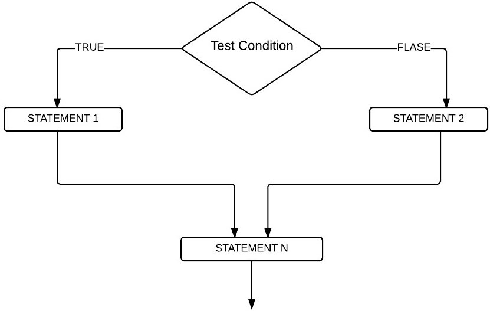

Generally, the compiler will execute the C programs line by line in the order that we write in our program.
But there are some situations where we have to run the statements based on the condition. For that, we can use the following control statements.
Apart from this, we might get into a situation where we have to execute some statements repeatedly. For this, you can use the C Programming loops.
1. If Statement
2. If Else Statement
3. Else If Statement
4. Nested If Statement
5. Break Statement
6. Continue Statement
7. Goto Statement
8. Switch Statement
||If Statement||
The If statement in C programming is one of the most useful decision-making statements in real-time programming.
C If statement allows the compiler to test the condition first, and then, depending upon the result, it will execute the statements.
If the test condition is true, then only statements within the if statement performed by the C compiler.
Syntax:
From the above code, If the test condition in the If statement is true, then the statements (Statement 1, Statement 2, Statement 3, ……., Statement n) will be
executed. Otherwise, all these statements will skip.
Example
Output:
||Nested if in c||
Nested If in C Programming is placing If Statement inside another IF Statement. Nested If in C is helpful if you want to check the condition inside a condtion.
If Else Statement prints different statements based on the expression result (TRUE, FALSE). Sometimes we have to check even further when the condition is TRUE.
In these situations, we can use these C Nested IF statements, but be careful while using it.
For example, every person is eligible to work if he is 18 years old or above else he is not eligible. However, companies will not give a job to every person.
So, we use another IF Statement, also called as Nested If Statement in C, to check his education qualifications or any specific company requirements.
Syntax:
Flow char
If the Test Condition1 is FALSE, STATEMENT3 will execute. When Test Condition1 is TRUE, then C Programming will check for the Test Condition2.
If it is TRUE, STATEMENT1 will execute else STATEMENT2.
Example
Output 1:
Output 2:
Output 3:
||If Else Statement||
The If Else statement in C Programming is an extension to the If statement in C (which we discussed in the earlier post). We already saw the If statement,
and it will only execute the statements when the given condition is true. And if the condition is false, it will not execute statements.
In the real-world, it would be nice to execute something when the condition fails. To do so, If else statement used. Here,
Else statement will execute the statements when the condition fails.
Syntax:
If the test condition present in the above structure is true, the True statements will execute. When the condition is false, False statements will execute.
Flow Chart
 Example
Output 1:
Output 2:
|Else If Statement||
The Else If Statement in C is instrumental while we have to test several conditions. Apart from Else If Statement in C, we can utilize the
Nested If statement to accomplish the same. However, as the total number of conditions rises, the code complexity will further grow.
Else If statement in C effectively handles multiple statements by sequentially executing them. Javac will check for the first condition.
If the condition result is TRUE, then the statements present in that block will run. If the result is FALSE, Javac verifies the Next one
(Else If condition) and so on.
Synatx:
Flow Chart
Example
Output 1:
Output 2:
Output 3:
Output 4:
||Nested If Else Statement||
Nested if else statements play an important role in C programming, it means you can use conditional statements inside another conditional statement.
Synatx:
Flow Chart
Example
Output 1:
Output 2:
||Break Statement in c||
The Break statement in C Programming is very useful to exit from any loop such as For Loop, While Loop, and Do While.
While executing these loops, if the C compiler finds the break statement inside them, then the loop will stop running the statements
and immediately exit from the loop.
The C Break statement and Continue Statement statements are two important keywords used to alter the flow of a program in any programming language.
Loops are useful to execute a particular block of statements for n number of times until the test condition is false. There will be some
situations where we have to terminate the loop without executing all the statements. In these situations, we can use Break statement and
Continue statements in C programming.
For example, we have five statements inside the loop, and we want to exit from the loop when a certain condition is True; otherwise, it has to execute them.
In these situations, we can place the Break statement inside the If condition. If the condition is True, the compiler will execute the break statement in C.
It means the break statement will exit the controller from the loop completely. Otherwise, it will run all the statements.
Syntax:
||Continue Statement in c||
The Continue statement in C Programming is another one that controls the flow of loops. This C Continue statement used inside For Loop,
While Loop and Do While Loops. While executing these loops, if the compiler finds the continue statement inside them, then the loop will stop
the current iteration and starts the new iteration from the beginning.
For example, we have 10 statements inside the loop. And we want to skip executing the second 5 statements (statement 6 —statement 10) when a
certain condition is True or else it has to execute all the 10 statements inside the loop. In these situations, we place the condition after the
5th statement, followed by this C continue statement. If the condition is True, then it will stop executing statements 6 to 10. Otherwise,
it will execute statements 1 to 10.
Syntax:
||Go To Statement in c||
The go to statement in C Programming is useful to alter the flow of a program. When the compiler reaches the go to statement, then it will jump unconditionally ( both forward and backward ) to the location specified in the go to statement (we called it as a label).
Unlike the Break and Continue Statement, the go to statement in C doesn’t require any If Statements to perform.
Syntax:
The label specified after the go to statement in C Programming is the location where we place the statements to execute.
From the above syntax, you can understand that we can place the label anywhere in the program. It doesn’t matter if you put before the go
to statement or after.
||Switch case in c||
If Else in C allows us to choose between TRUE or FALSE, when there are more than two options, we use Nested If. Say, What if we have ten alternatives
to choose?, if we use Nested If, in this situation, the programming logic will be difficult to understand. In C Programming, Else if statement and
Switch statements can handle these types of problems effectively. We already discussed the Else If Statement in our previous post so, let us
explore the switch case in C language here.
The working functionality of the switch case in C is almost the same as if condition. As we said before, the Switch statement may have n number of
cases. So, the switch case compares the expression value with the values assigned in the case statements. If both the values expression value and
case value match, then statements present in that case statement will execute. Let us see the syntax of the switch case in C Programming for better understanding
Synatx:
The value of expression should be either integer or characters (We can write the expression as n/2…. also, but the result should be an integer).
Option 1, Option 2…… are constants.
C Switch case allows us to add a default statement. If the variable value is not matching with any of the case statements,
the code present in the default will execute.
A break is useful to come out from the switch statement. Otherwise, all the statements in the C switch condition will execute.
Whenever a Break Statement encountered, the execution flow would directly come out of the switch.
.jpg)